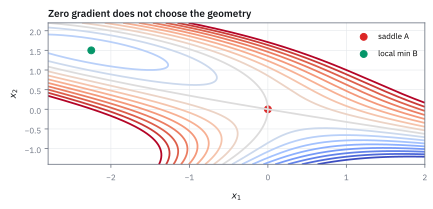

12.3 The Itô Integral
ใช้เฉพาะข้อมูลที่รู้ก่อนตัดสินใจ
กลยุทธ์หนึ่งถือสินทรัพย์เท่ากับระดับของเส้นสุ่ม W ในตลาดที่ไม่มี edge โค้ด backtest ชุดแรกใช้ขนาดสถานะ ณ ต้นช่วง ชุดที่สองเผลอใช้ ณ ปลายช่วง รันหนึ่งปีบน 10,000 เส้นทาง กำไรเฉลี่ยของแต่ละชุดคือเท่าไร?
เฉลย: ชุดแรกได้เฉลี่ย 0 ตามที่ตลาดไม่มี edge ควรให้ ชุดที่สองได้เฉลี่ย +1 ต่อปีพอดี ทุกเส้นทางได้กำไรปลอมเท่ากับผลรวมกำลังสองของการขยับ ซึ่งหัวข้อ 12.1 แสดงว่าเท่ากับเวลา
Itô integral คือกำไรสะสมที่คิดแบบชุดแรก ขนาดสถานะต้องตัดสินจากข้อมูลก่อนราคาขยับเท่านั้น
ศัพท์ที่ใช้ในหัวข้อนี้
- Itô integral
- ผลรวมของขนาดสถานะ ณ ต้นช่วงคูณการขยับในช่วงนั้น เมื่อซอยเวลาถี่ขึ้นเรื่อย ๆ ใช้แทนกำไรสะสมของกลยุทธ์ที่ไม่มองอนาคต
- integrand
- ตัวที่คูณการขยับในแต่ละช่วง ในที่นี้คือขนาดสถานะ ใช้บอกว่าถือเท่าไรในแต่ละช่วง
- adapted process
- ขนาดสถานะที่ค่า ณ เวลาใดคำนวณได้จากข้อมูลที่เห็นถึงเวลานั้นเท่านั้น ใช้บังคับให้กฎการเทรดทำได้จริง
- look-ahead bias
- ความผิดพลาดที่เอาข้อมูลอนาคตมาใช้ตัดสินใจในอดีต ใช้ตรวจจับ backtest ที่รายงานผลสูงเกินจริง
- backtest
- การรันกฎการเทรดย้อนหลังบนข้อมูลย้อนหลัง ใช้ประเมินกลยุทธ์ก่อนใช้เงินจริง
- profit and loss (P&L)
- กำไรขาดทุนสะสมของสถานะ ใช้วัดผลทางการเงินของ Itô integral
- martingale
- กระบวนการที่ค่าเฉลี่ยของอนาคตเมื่อรู้ข้อมูลถึงวันนี้เท่ากับค่าวันนี้ (หัวข้อ 9.1) ใช้บอกว่ากลยุทธ์บนตลาดที่ไม่มี edge ไม่มีกำไรเฉลี่ย
- Itô isometry
- สูตรที่ว่าค่าเฉลี่ยของกำลังสองของ Itô integral เท่ากับ integral ของค่าเฉลี่ยของกำลังสองของขนาดสถานะตามเวลา ใช้คำนวณความเสี่ยงโดยไม่ต้องหารูปแบบทั้งก้อน
- delta hedging
- การถือหุ้นจำนวนหนึ่งเพื่อหักล้างการขยับของมูลค่า option ใช้เป็นตัวอย่างจริงของกำไรสะสมที่เป็น Itô integral (บทที่ 13)
- Stratonovich integral
- integral อีกแบบที่อ่านขนาดสถานะที่กลางช่วง ใช้ในฟิสิกส์เพราะ chain rule เดิมใช้ได้ แต่ต้องรู้ครึ่งช่วงข้างหน้า จึงไม่ใช้กับการเทรด
สัญลักษณ์ที่ใช้ในหัวข้อนี้
| สัญลักษณ์ | ความหมาย | หน่วย |
|---|---|---|
| $t_0,t_1,\dots,t_n$ | จุดแบ่งเวลาตั้งแต่ 0 ถึง $T$ | ปี |
| $H_t$ | ขนาดสถานะที่ตัดสินจากข้อมูลถึงเวลา $t$ | หุ้นหรือหน่วยความเสี่ยง |
| $W_t$ | Brownian motion มาตรฐาน | $\sqrt{\text{year}}$ |
| $\Delta W_i$ | การขยับจาก $t_i$ ถึง $t_{i+1}$ | $\sqrt{\text{year}}$ |
| $I_T$ | Itô integral คือกำไรสะสมถึง $T$ | สถานะ × หน่วยของ W |
| $R_T$ | ผลรวมที่แอบใช้ขนาดสถานะ ณ ปลายช่วง | เดียวกับ $I_T$ |
| $Q_n$ | ผลรวมกำลังสองของการขยับ | ปี |
| $\mathbb E_{t}[\cdot]$ | ค่าเฉลี่ยเมื่อรู้ข้อมูลถึงเวลา $t$ (หัวข้อ 9.1) | หน่วยของตัวข้างใน |
ที่มาที่ไป: ความต่างระหว่างเทรดจริงกับเทรดในกระดาษ
integral แบบเดิมใช้ได้เมื่อเส้นที่เป็นฐานมีความยาวรวมจำกัด แล้วอ่านค่าตรงไหนของช่วงก็ได้คำตอบเดียวกัน แต่เส้นสุ่มมีผลรวมกำลังสองเท่ากับเวลา ความยาวรวมจึงไม่จำกัด จุดที่เลือกอ่านค่าจึงเปลี่ยนคำตอบ
Kiyosi Itô (ราวปี 1944) เลือกอ่านที่ต้นช่วง ซึ่งตรงกับการเทรดจริงที่ต้องตั้งสถานะก่อนราคาขยับ ราวปี 1966 Stratonovich เสนอให้อ่านกลางช่วง chain rule เดิมกลับมาใช้ได้ แต่ต้องรู้ครึ่งช่วงข้างหน้า จึงเสียสมบัติ martingale
ขั้นที่ 1 — สี่ก้าวด้วยมือ: ตั้งสถานะก่อน ราคาค่อยขยับ
ใช้เส้นทางเดียวกับหัวข้อ 12.2: W เดิน 0, 0.5, 0, 0.5, 1.0 และถือสถานะเท่ากับ W ณ ต้นแต่ละช่วง ตัวอย่างหยาบนี้ใช้สาธิตการคิด ไม่ได้อ้างว่าเป็นเส้นทางสุ่มทั่วไป
ตัวคูณคือระดับที่รู้แล้วก่อนช่วงเริ่ม ตัวเลขในวงเล็บคือการขยับที่ตามมา นี่คือสิ่งที่ทำได้จริงในตลาด ได้กำไรสะสมศูนย์
ขั้นที่ 2 — แอบใช้ปลายช่วง: กำไรปลอมโผล่มา
คิดใหม่ด้วยระดับ ณ ปลายช่วง ซึ่งต้องรู้การขยับก่อนตั้งสถานะ ทำไม่ได้จริง แต่เกิดได้ง่ายในโค้ดที่เลื่อนดัชนีผิดหนึ่งช่อง
ทุกช่วงถือสถานะที่รู้แล้วว่าราคาไปทางไหน จึงได้กำไร 1.0 จากข้อมูลอนาคตล้วน ๆ เส้นทางเดียวกัน ตลาดเดียวกัน ต่างกันแค่ว่าอ่านค่าตอนไหน
ขั้นที่ 3 — กำไรปลอมเท่ากับผลรวมกำลังสองพอดี
ลบสองผลรวมกันแบบทั่วไป เพื่อดูว่าส่วนต่างขึ้นกับอะไร ส่วนต่างที่คำนวณได้แปลว่าตรวจได้ว่า backtest รั่วไปเท่าไร
ระดับปลายช่วงลบระดับต้นช่วงก็คือการขยับนั่นเอง ส่วนต่างจึงเป็นผลรวมกำลังสอง ซึ่งไม่หายเมื่อซอยถี่ แต่ไปหาเวลาทั้งหมด ในวิชา calculus ปกติสองวิธีนี้ให้คำตอบเดียวกัน แต่กับเส้นสุ่มต่างกันหนึ่งปีต่อปี
ขั้นที่ 4 — นิยามของ Itô integral: อ่านที่ต้นช่วงเสมอ
บรรทัดนี้เป็นนิยาม ขนาดสถานะอ่านที่ต้นช่วง คูณการขยับหลังจากนั้น แล้วซอยให้ช่วงที่ยาวที่สุดสั้นลงเรื่อย ๆ
H ต้องคำนวณได้จากข้อมูลถึงต้นช่วง ตำราเรียกเงื่อนไขนี้ว่า adapted ขั้นที่ 1 คือผลรวมนี้ที่ซอยแค่ 4 ช่วง
ขั้นที่ 5 — คำตอบแบบปิดจาก Itô's lemma
ใช้กฎของหัวข้อ 12.2 กับ f = x² บน W ซึ่งมี drift ศูนย์และขนาดส่วนสุ่มหนึ่ง แล้วรวมทั้งสองข้าง
พจน์ dt คือพจน์ความโค้ง ถ้าเป็นเส้นเรียบ คำตอบจะเป็นครึ่งหนึ่งของ W² เฉย ๆ ตรวจกับสี่ก้าว: ครึ่งหนึ่งของ 1 − 1 เท่ากับ 0 ตรงกับขั้นที่ 1 ส่วนผลรวมปลายช่วงให้ครึ่งหนึ่งของ W² + T คือ 1.0 ตรงกับขั้นที่ 2
ขั้นที่ 6 — ทำไมกำไรเฉลี่ยเป็นศูนย์: ถือก่อน ขยับทีหลัง
ดูทีละช่วง ขนาดสถานะรู้แล้วที่ต้นช่วง จึงออกมานอกค่าเฉลี่ยได้ ส่วนการขยับที่ตามมาเฉลี่ยศูนย์ไม่ว่าอดีตเป็นอย่างไร
กฎเฉลี่ยสองชั้นของหัวข้อ 9.1 แยกค่าเฉลี่ยเป็นมุมมอง ณ ต้นช่วง ถ้าอ่านที่ปลายช่วง ขนาดสถานะมีการขยับของช่วงนั้นปนอยู่ จึงได้ Δt เพิ่มมาทุกช่วง รวมกันเป็น T
ขั้นที่ 7 — ความเสี่ยงของกำไรสะสม: พิสูจน์ Itô isometry
กระจายกำลังสองของผลรวมเป็นพจน์ของแต่ละช่วงกับพจน์ไขว้ของทุกคู่ แล้วใช้เหตุผลเดียวกับขั้นที่ 6
พจน์ไขว้ของคู่ที่ i มาก่อน j มองจากต้นช่วง j ทุกอย่างรู้แล้ว ยกเว้นการขยับช่วง j ซึ่งเฉลี่ยศูนย์ พจน์ไขว้จึงหายทุกคู่ พจน์ของแต่ละช่วงเหลือกำลังสองของสถานะคูณความยาวช่วง รวมกันได้ integral ตามเวลา
ขั้นที่ 8 — แทน H = W: ความผันผวน 0.7071 ต่อปี และตรวจสองทาง
ค่าเฉลี่ยของ W² ณ เวลา t คือ variance ของมัน เท่ากับ t แทนในสูตรของขั้นที่ 7 แล้วตรวจกับคำตอบแบบปิดของขั้นที่ 5
ค่าเฉลี่ยของกำลังสี่ของก้อนมาตรฐานคือ 3 จากหัวข้อ 10.5 สองทางได้ 0.5 ตรงกัน กำไรสะสมของกลยุทธ์นี้เฉลี่ยศูนย์ แต่เหวี่ยง 0.7071 ต่อปี และขาดทุนได้มากสุดแค่ 0.5 เพราะ W² ติดลบไม่ได้
Figure 12.3a — ตัดสินใจที่ขอบซ้าย เทียบกับขอบขวา

ต้นช่วงเลือกสถานะก่อนราคาขยับจึงทำได้จริง ปลายช่วงเลือกหลังรู้ผลแล้ว และฝังการมองอนาคตไว้หนึ่งช่วงทุกครั้ง
ขั้นที่ 9 — ตรวจด้วยโค้ด: 10,000 เส้นทาง เส้นละหนึ่งปีเทรด 252 วัน
ในโค้ด ความผิดนี้คือการเลื่อนดัชนีหนึ่งช่อง (W[1:]*dW).sum() ใช้ระดับปลายช่วง ส่วน (W[:-1]*dW).sum() ใช้ต้นช่วง ผลที่ขั้น 3, 6 และ 8 ทำนายไว้คือ
รันจริงด้วย numpy ได้ค่าเฉลี่ยต้นช่วง −0.002 ปลายช่วง 0.996 ผลรวมกำลังสอง 0.998 ความผันผวน 0.089 ทุกตัวอยู่ในช่วงที่ทำนาย และส่วนต่างเท่ากับผลรวมกำลังสองทุกเส้นทางจนถึงหลักทศนิยมที่ 15
Figure 12.3b — เส้นทางเดียวกัน แต่ลงบัญชีคนละแบบ

เส้นทางเดียวกันให้ 0 เมื่ออ่านที่ต้นช่วง แต่ให้ 1.0 เมื่ออ่านที่ปลายช่วง ส่วนต่างทั้งหมดมาจากข้อมูลที่ยังไม่ควรรู้
ขั้นที่ 10 — เปลี่ยนตัวคูณเป็นเวลาล้วน: ส่วนต่างหายไป
ใช้การขยับชุดเดิม แต่ให้ขนาดสถานะเท่ากับเวลา ณ จุดนั้นแทนระดับของ W ดูว่าส่วนต่างระหว่างต้นช่วงกับปลายช่วงยังอยู่ไหม
ส่วนต่างของเวลาเท่ากับ Δt ทุกช่วง จึงดึงออกได้ เหลือผลรวมของการขยับ ซึ่งคือ W ปลายทาง ส่วนต่างเป็น Δt คูณ W จึงหายเมื่อซอยถี่ ต่างจากกรณี H = W ที่ส่วนต่างเป็นผลรวมกำลังสองและไม่หาย
Itô correction จึงไม่ได้มาจากการที่ตัวคูณสุ่ม แต่มาจากการที่ตัวคูณขยับไปพร้อมกับเส้นสุ่มเอง
ขั้นที่ 11 — ความเสี่ยงของกรณีเวลาล้วน และกับดักของการซอยหยาบ
ค่าเฉลี่ยเป็นศูนย์ตามขั้นที่ 6 ความเสี่ยงใช้สูตรของขั้นที่ 7 แล้วเทียบกับการคำนวณแบบซอยหยาบ
ซอยสี่ช่วงได้แค่สองในสามของค่าจริง เพราะใช้จุดซ้ายบน function ที่เพิ่มขึ้น ได้พื้นที่ต่ำกว่าจริงเสมอ ซอยถี่ขึ้นตัวเลขขยับเข้าหาหนึ่งในสาม แบบจำลองที่ซอยหยาบจึงรายงานความเสี่ยงต่ำกว่าจริงอย่างเป็นระบบ ตรวจพบได้และแก้ได้
ขั้นที่ 12 — งานจริง: กำไรสะสมของการ hedge คือ Itô integral
desk ที่ขาย option แล้วถือหุ้นไว้หักล้าง ต้องตัดสินจำนวนหุ้นก่อนราคาวันนั้นขยับ ลองสี่วันด้วยจำนวนหุ้นที่ตั้งตอนเช้า
สูตรตั้งราคา derivative ทุกตัวเขียนได้ในรูปนี้ มูลค่าปลายทางเท่ากับราคาวันนี้ บวกกำไรสะสมของการถือหุ้นตามแผน จำนวนหุ้นตั้งตอนเช้าก่อนเห็นราคา นี่คือ Itô integral ที่ซอยเป็นรายวัน บทที่ 13 ใช้รูปนี้พิสูจน์สูตร Black–Scholes
Figure 12.3c — distribution ของ integral ที่ใช้ได้

กำไรสะสมของกรณี H = W มีขอบล่าง −0.5 และหางขวายาว จึงขาดทุนเล็กบ่อยและได้กำไรก้อนใหญ่เป็นครั้งคราว แม้ค่าเฉลี่ยเท่ากับ 0
คำตอบ ตรวจเอง และแปลว่าอะไร
โจทย์ให้อะไรมาบ้าง: กลยุทธ์ถือสถานะเท่ากับ W บนตลาดที่ไม่มี edge หนึ่งปี backtest สองแบบ
คำตอบ: แบบต้นช่วงได้กำไรเฉลี่ย 0 และเหวี่ยง 0.7071 แบบปลายช่วงได้กำไรปลอมเฉลี่ย +1 ต่อปี เท่ากับเวลาพอดี วิธีตรวจคือเลื่อนสถานะลงหนึ่งแถวให้ใช้เฉพาะข้อมูลก่อนผลตอบแทน แล้วรันซ้ำด้วยตัวเลขสุ่มชุดเดิม
ตรวจเองใน 10 วินาที: 1 หาร 1.41421 ได้ 0.7071 และกลยุทธ์ที่ไม่มี edge ต้องได้ค่าเฉลี่ยใกล้ศูนย์ ถ้าได้เกินความผันผวนหารรากของจำนวนเส้นทางไปมาก ให้สงสัยการมองอนาคตก่อน
แปลว่าอะไร: ใช้ตลาดสุ่มที่รู้แน่ว่าไม่มี edge เป็นชุดทดสอบของ backtest ทุกตัว ถ้าได้กำไร แปลว่าโค้ดรั่ว
ตัวอย่างที่สอง — ตัวคูณแบบไหนมี Itô correction
โจทย์ให้อะไรมาบ้าง: ตัวคูณสองแบบบนการขยับชุดเดียวกัน แบบแรกคือระดับของ W แบบที่สองคือเวลา
คำตอบ: แบบเวลาล้วนได้ 0.5 กับ 0.75 แต่ส่วนต่างหดหายเมื่อซอยถี่ แบบระดับของ W ได้ส่วนต่างที่เข้าหา T ไม่หาย
ตรวจเองใน 10 วินาที: ถ้าส่วนต่างเป็นผลรวมกำลังสองของการขยับ มันไม่หาย ถ้าเป็นผลรวมของการขยับคูณความยาวช่วง มันหาย
แปลว่าอะไร: เวลาเลือกตัวคูณในแบบจำลอง ให้ถามว่ามันขยับไปพร้อมกับตลาดหรือไม่ ถ้าใช่ ต้องคิด Itô correction มิฉะนั้นความเสี่ยงจะถูกประเมินผิด
กับดัก: คิดว่ายุติธรรมแปลว่าสมมาตร
Itô integral มีค่าเฉลี่ยศูนย์ แต่รูปร่างไม่จำเป็นต้องสมมาตร ตัวอย่าง H = W ขาดทุนได้มากสุด 0.5 แต่กำไรไม่มีเพดาน โอกาสขาดทุนจึงสูงกว่าครึ่งหนึ่ง แม้ค่าเฉลี่ยเป็นศูนย์ ถ้ารายงานแค่ค่าเฉลี่ยกับความผันผวน ผู้อ่านจะนึกภาพระฆังซึ่งผิดรูป
ข้อจำกัด: วิธีนี้สมมติอะไร และของจริงเป็นอย่างไร
| เรื่อง | วิธีนี้สมมติว่า | ของจริงเป็นอย่างไร | ผลที่ตามมาเวลาใช้งาน |
|---|---|---|---|
| การซื้อขายต่อเนื่อง | ปรับสถานะได้ตลอดเวลา | ปรับได้เป็นครั้ง ๆ และมีต้นทุน | กำไรที่คำนวณได้สูงกว่าที่ทำได้จริง |
| ไม่มีผลกระทบต่อราคา | การซื้อขายไม่ดันราคา | คำสั่งใหญ่ดันราคาเอง | กลยุทธ์ที่ต้องปรับบ่อยและใหญ่จะได้ผลแย่กว่าที่คำนวณมาก |
| ขนาดสถานะ | ถือขนาดเท่าไรก็ได้ | มีขีดจำกัดจากทุนและกฎ | กลยุทธ์ที่คำนวณว่าคุ้มอาจทำจริงไม่ได้ในขนาดที่ต้องการ |
แถวแรกคือช่องว่างหลักระหว่างผลใน backtest กับผลจริง
แล้วเอาไปใช้ทำอะไรได้จริงบ้าง
ใช้เขียนกำไรขาดทุนสะสมของกลยุทธ์ที่ปรับขนาดสถานะตามสัญญาณ ซึ่งเป็นรูปของกลยุทธ์เชิงปริมาณทั้งหมด และใช้เป็นภาษาของพอร์ตเลียนแบบในบทที่ 13
ใช้เป็นเหตุผลว่าทำไมต้องตัดสินใจด้วยข้อมูลก่อนหน้าเท่านั้น เพราะถ้าใช้ข้อมูลปลายช่วง จะได้กำไรปลอมที่คำนวณขนาดได้ และใช้ Itô isometry คำนวณความเสี่ยงของกลยุทธ์ก่อนรันจำลอง
โค้ดตรวจ Itô integral: อ่านต้นช่วงกับปลายช่วงต่างกันเท่าไร
import numpy as np
from math import sqrt
W = np.array([0, 0.5, 0, 0.5, 1.0]); dW = np.diff(W); t = np.linspace(0, 1, 5)
I, R = (W[:-1] * dW).sum(), (W[1:] * dW).sum()
assert I == 0 and R == 1.0 and R - I == (dW ** 2).sum() and abs(0.5 * (W[-1] ** 2 - 1) - I) < 1e-12
left, right = (t[:-1] * dW).sum(), (t[1:] * dW).sum()
assert left == 0.5 and right == 0.75 and abs(right - left - 0.25 * W[-1]) < 1e-12
for n, want in ((4, 7 / 32), (8, 0.2734), (64, 0.3256)):
assert abs(((np.arange(n) / n) ** 2).sum() / n - want) < 5e-5
assert abs(np.dot([0.50, 0.60, 0.40, 0.55], [1.0, -2.0, 1.5, 0.5]) - 0.175) < 1e-12
rng = np.random.default_rng(16)
dWs = rng.standard_normal((10_000, 252)) * sqrt(1 / 252)
Wp = np.cumsum(dWs, 1); Wl = np.hstack([np.zeros((10_000, 1)), Wp[:, :-1]])
I, R, Q = (Wl * dWs).sum(1), (Wp * dWs).sum(1), (dWs ** 2).sum(1)
assert abs(I.mean()) < 0.03 and abs(R.mean() - 1) < 0.03 and np.allclose(R - I, Q)
assert abs(I.std() - sqrt(0.5)) < 0.02 and abs(Q.std() - sqrt(2 / 252)) < 0.005
assert np.allclose(I, 0.5 * (Wp[:, -1] ** 2 - Q))โค้ดตรวจสี่ก้าวว่ากำไรปลอมจากการอ่านปลายช่วงเท่ากับผลรวมกำลังสองพอดี จำลอง 10,000 เส้นทางได้ค่าเฉลี่ยของ Itô integral ราวศูนย์ ความผันผวน 0.7071 และ I = ½(W² − Q) ทุกเส้นทาง
สรุปที่ใช้ได้จริง
- Itô integral อ่านขนาดสถานะที่ต้นช่วง เพราะต้องตัดสินจากข้อมูลที่มีจริง
- ถ้าอ่านที่ปลายช่วงด้วยตัวคูณ W จะได้กำไรปลอมเท่ากับผลรวมกำลังสอง ซึ่งเข้าหาเวลาทั้งหมด
- กำไรเฉลี่ยเป็นศูนย์เพราะถือก่อนแล้วราคาค่อยขยับ ความเสี่ยงหาได้จาก Itô isometry: สำหรับ H = W ได้ 0.7071 ต่อปี
- backtest ต้องเลื่อนสัญญาณก่อนคูณผลตอบแทน และทดสอบกับตลาดสุ่มที่รู้ว่าไม่มี edge
- ตัวคูณที่เป็นเวลาล้วนไม่มีส่วนต่าง Itô correction มาจากตัวคูณที่ขยับไปพร้อมเส้นสุ่ม